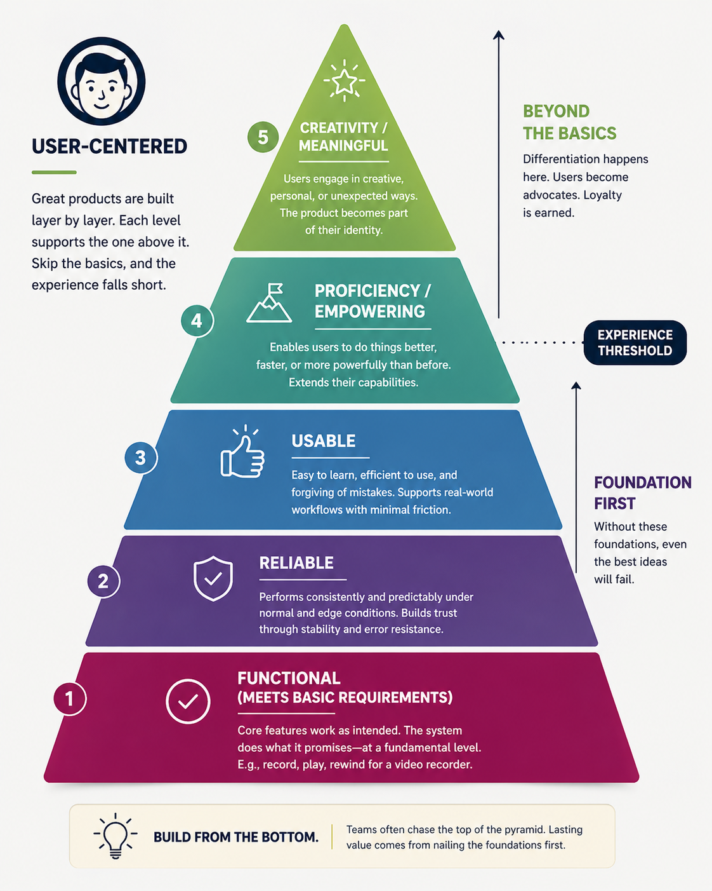

Stop Building at the Top of the Pyramid
In product development, teams love talking about innovation.
AI copilots, personalized recommendations, gamification, social features. “Delight.”
These initiatives photograph well in strategy decks and demo nicely in executive meetings. They create the impression of progress.
But many products fail for a much simpler reason:
They try to build penthouses on top of cracked foundations.
A useful framework for understanding this problem is the Hierarchy of User Needs, inspired by Maslow’s Hierarchy of Needs.
At each level, a product must satisfy a more fundamental requirement before users can appreciate what comes next.
1) Functional: Does it actually work?
This is the most basic requirement.
- A video recorder should record video.
- A rideshare app should let me book a ride.
- A banking app should allow me to transfer money.
This sounds obvious, but many products fail here.
Early versions of the video game Cyberpunk 2077 were so riddled with technical issues that players couldn’t appreciate the game’s ambition.
And the notorious launch of Healthcare.gov failed because users couldn’t even complete enrollment!
Nothing else matters if the product cannot fulfill its basic promise.
2) Reliable: Does it work consistently?
A product can technically function and still be deeply frustrating.
- Your smart home app connects to your lights...sometimes.
- Your food delivery app loads...most of the time.
- Your Bluetooth headphones pair after three attempts.
This is where trust is built — or destroyed.
Sonos recently learned this the hard way. Their app redesign introduced reliability issues that made customers furious because people fundamentally expect speakers to reliably play music.
Reliability is rarely flashy, but users notice when it’s missing.
3) Usable: Can normal people figure it out?
Now we move beyond technical competence.
Can users accomplish tasks quickly?
Can they recover from mistakes?
Are workflows intuitive?
This is where many enterprise tools fail spectacularly.
You’ll often hear product teams justify bad UX with: “Our users are trained professionals.”
That’s often an excuse for poor design.
Venmo made splitting dinner, paying rent, or reimbursing friends feel effortless by turning what was once awkward coordination — cash, checks, bank transfers, and “I’ll pay you back later” conversations — into a few taps.
Meanwhile, many enterprise platforms feel like punishment through forms.

4) Empowering: Does it make users better?
This is where products begin creating meaningful competitive advantage.
The product helps users do things faster...or better...or at greater scale.
Figma dramatically improved collaborative design workflows.
GitHub transformed software collaboration.
Microsoft Excel remains powerful because it lets skilled users solve an enormous range of problems.
These products don’t just remove friction — they expand human capability.
5) Meaningful: Do users love it?
This is the top of the pyramid.
At this level, a product stops being merely useful and starts becoming personal. It becomes part of someone’s identity, habits, routines, or emotional world.
People don’t line up outside stores for the latest Apple iPhone because they simply need a phone that makes calls. The device became a lifestyle product and cultural symbol.
Peloton transformed exercise equipment into ritual. Users schedule their lives around classes, follow favorite instructors, and become part of a broader community.
Harley-Davidson may be one of the strongest examples of all. For many customers, buying a motorcycle means joining an identity-driven tribe so strong that some literally tattoo the company’s logo on their bodies.
At this stage, users don’t just tolerate your product: they advocate for it, they defend it, they integrate it into who they are.
And importantly — you cannot skip directly to this stage.
No one forms emotional attachment to a product that doesn’t work, crashes constantly, or frustrates them every day.
Meaning is earned at the top of a well-built pyramid.
Why companies keep getting this wrong
Because top-of-pyramid work is far more exciting.
Nobody gets promoted for reducing latency by 200 milliseconds, simplifying onboarding, or fixing brittle workflows. They get promoted for announcing “AI-powered experiences.”
Amazon Alexa is a great example. Amazon recently promoted new AI-powered capabilities for Alexa that promise more natural, sophisticated interactions.
But many users (myself included) are still stuck dealing with basic frustrations:
- “Why didn’t it understand me?”
- “Why did it activate randomly?”
- “Why can’t I reliably set a timer?”
That’s the ambition of modern product development: building intelligence on top of instability.
The most boring work often creates the most value
The strongest products are often built by teams willing to obsess over seemingly unremarkable things:
- Speed
- Consistency
- Clarity
- Error prevention
- Workflow efficiency
That work feels less glamorous. But it’s what earns the right to innovate later. It’s the foundation of a well-built pyramid.
Build from the bottom of the pyramid first — always.
— Dan Thoreson